The Eclipse Wyrm
The Raid's fourth boss, after the Heart of Noon. The shadow the sun threw as it fell, roosting on the Tower's broken crown under the Tear. Built and checked; not pushed, not live.
15 / 40
heroes cleared it once each at Normal (38 %): level with the Sun Warden (36 %)
50 / 50
rule checks pass: every move in and out of its zone, the pin, the stage, all three phases; the other bosses' checks still pass
0
errors at tiers 1 to 3, for a party of five, and for two bots through the real server
4
bosses in a run now: Warden, Ash and Ember, the Heart, the Wyrm
Its own mechanic: run in under its wings
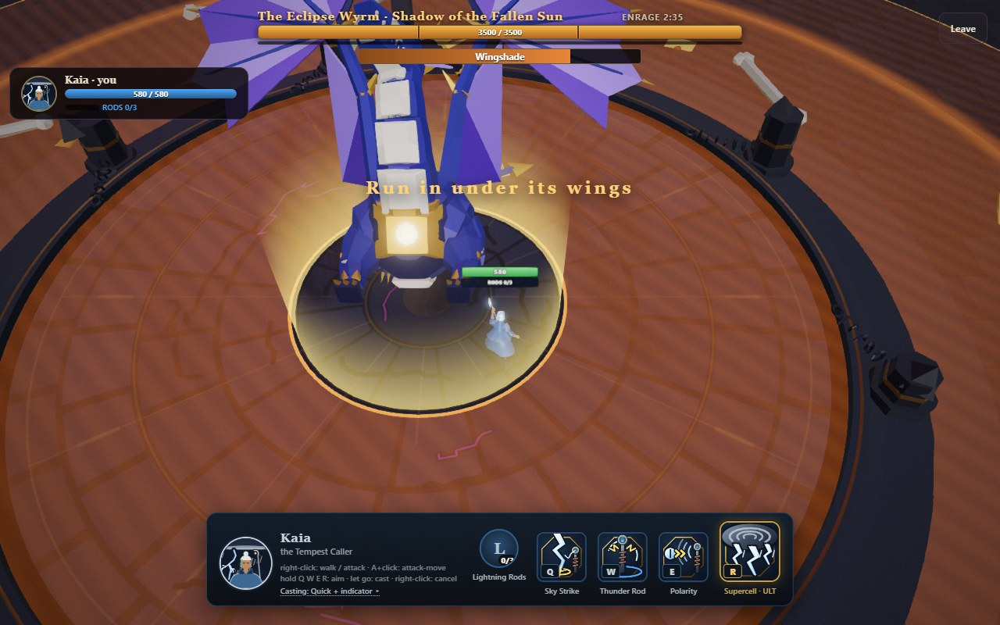
Its moves
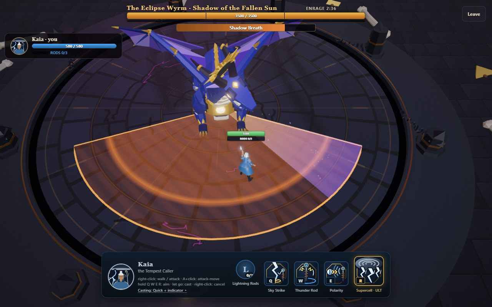
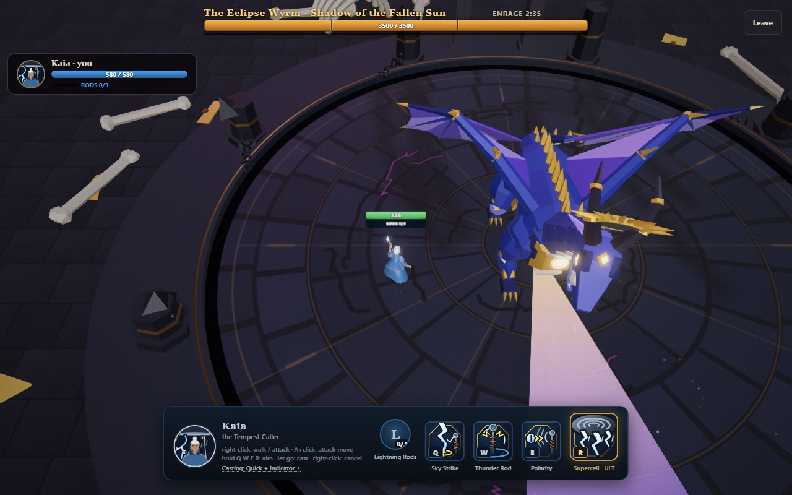
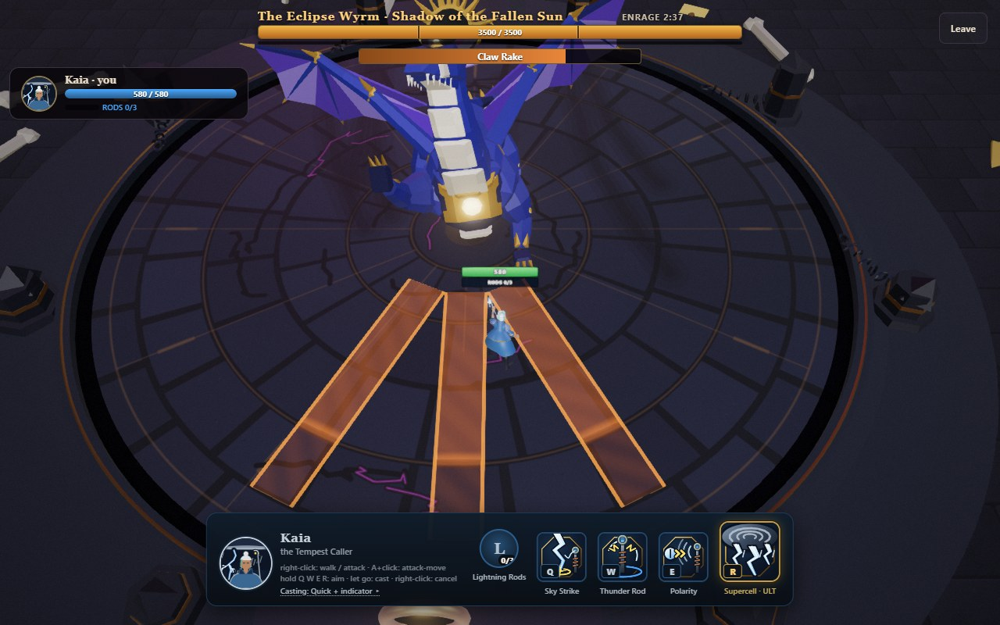
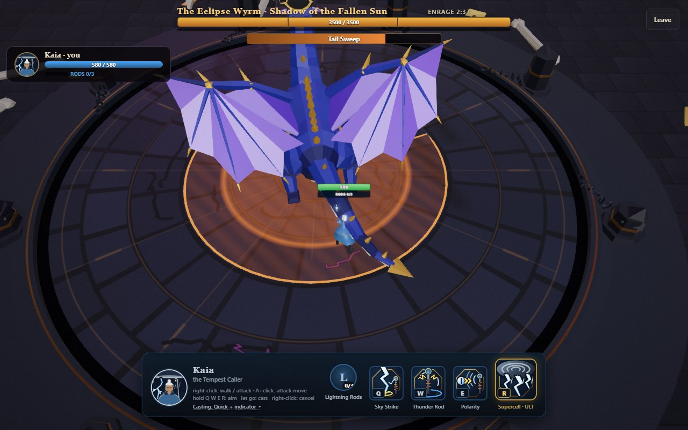
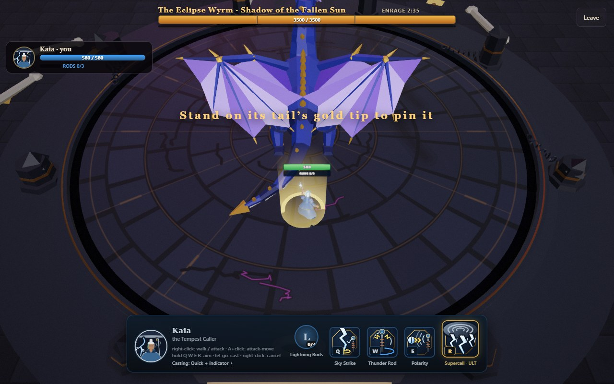
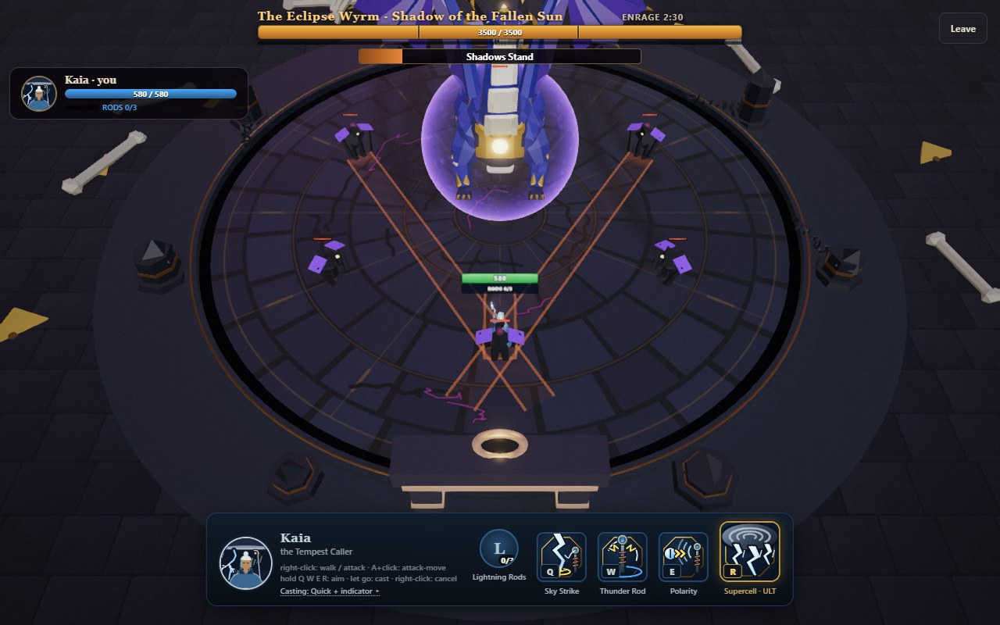
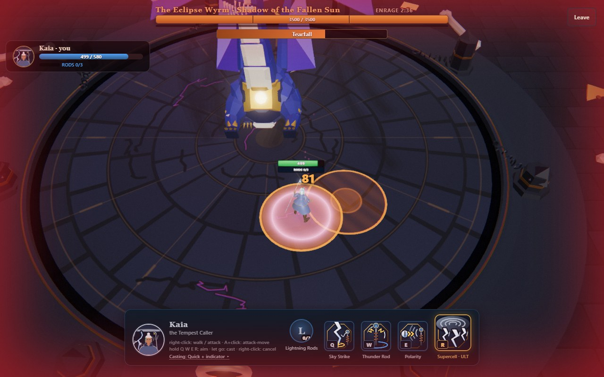
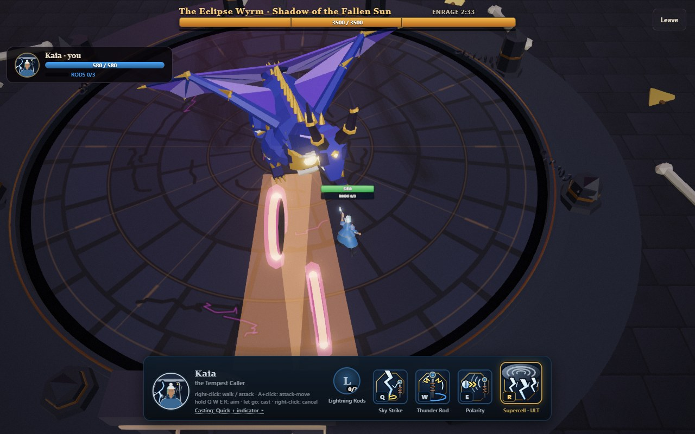
Where it lives
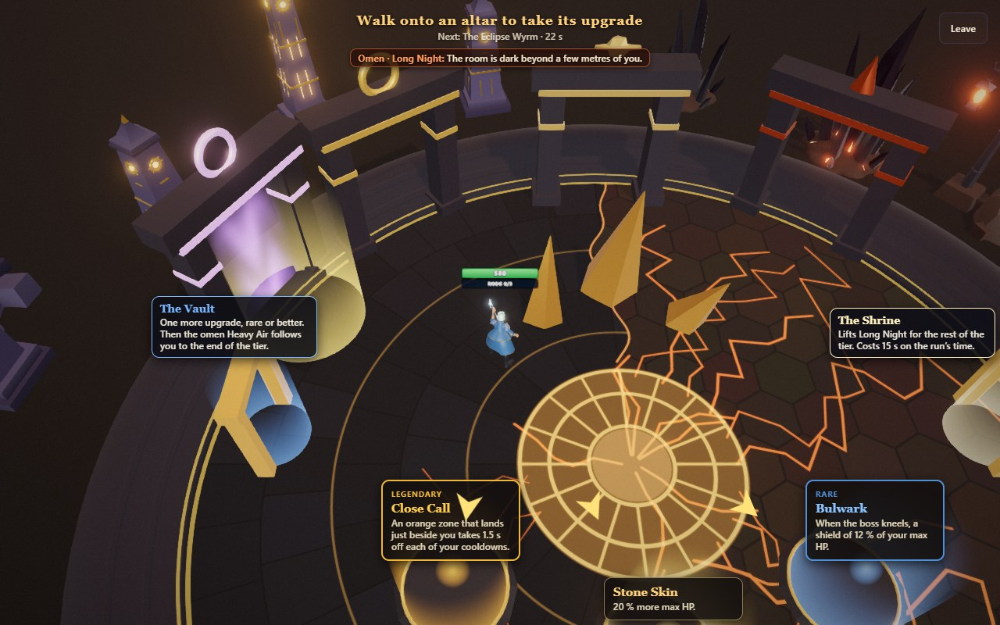
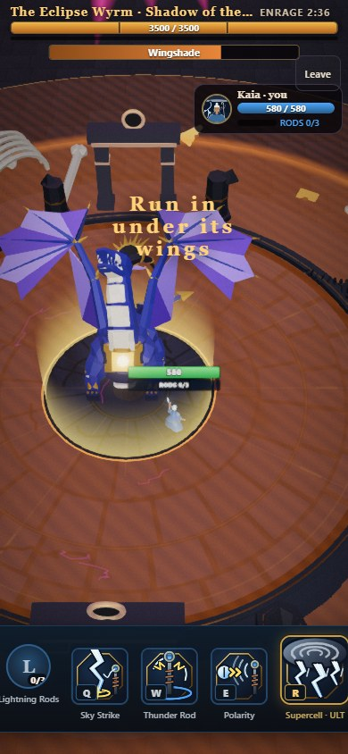
The Roost (its room) is drawn in code, first pass: a slate roof with the old sun-dial scorched into it, broken pillars with chains, bones and gilded plates past the lip, the Tear to the north.
The fight
| Phase | Moves |
|---|---|
| Shadowfall (100 %) | Claw Rake, Tail Sweep and Pin the Tail, Shadow Breath; Wingshade 14 s in, then every 22 s through the whole fight |
| Taking Wing (66 %) | opens with the stage, Shadows Stand; adds Tearfall and Wing Gust |
| Totality (33 %) | opens with The Eclipse Rolls, and keeps it |
Alone 4,000 HP, for two 8,600; it enrages at 2:40. Not tuned for a party yet, and not played by a person: whether the breath's glow reads in time on a phone is for your hand to say.